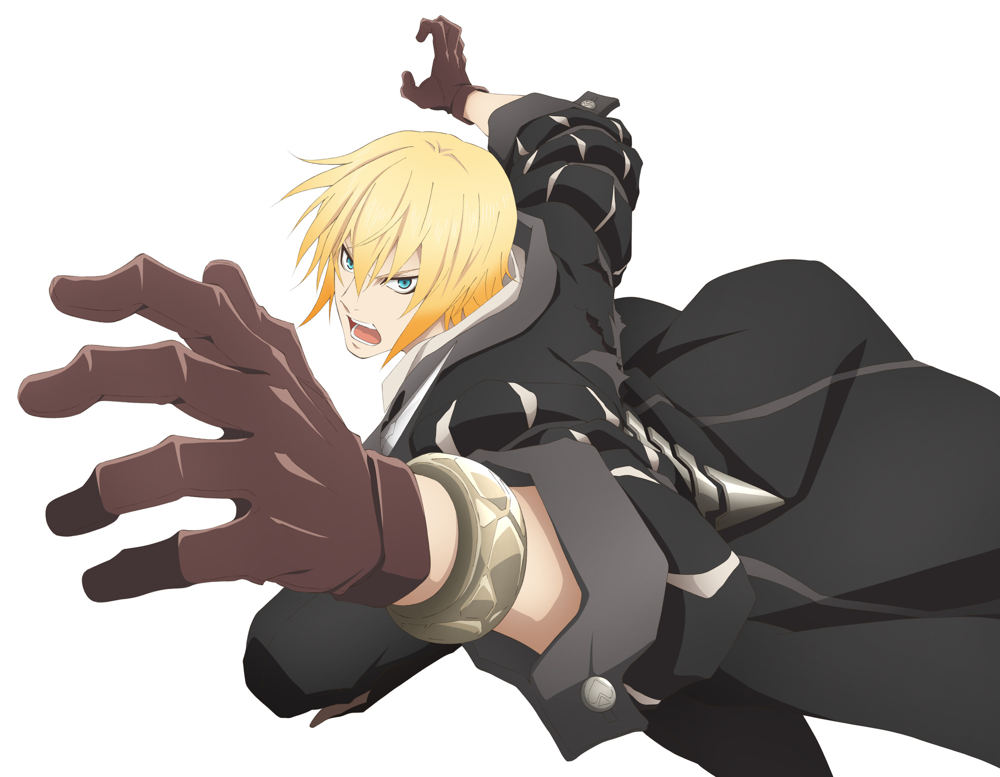

This website is a practice page of mine on my journey to learn web development. And what better motivator is there than making a webpage dedicated to your favourite video game?
The cast
The half-daemon heroine consumed by a thirst for vengeance towards the one who killed her dear brother and imprisoned her.
Another half-daemon who devoted his entire existence to the way of the sword. He is on a quest to kill his brother, the best swordsman in the world.
A young malak, kidnapped by Velvet. His free will has been sealed away by the Abbey, and has been used as a living weapon. During their journey, he has to learn to think on his own and find his purpose in life.

Second-in-command in the world's most infamous pirate crew, the malak Eizen joins Velvet on her quest to free his captain Aifread from the hands of the Abbey.
A whimsical witch who joined just for fun. A constant annoyance for Velvet with her tongue-in-cheek attitude and jesting, but her real purpose is a mystery.
Originally a Praetor of the Abbey and Velvet's nemesis, she soon catches glimpses of the Abbey's dark side, and starts to question their teachings. She joins Velvet to tear away from the dogmas of the Abbey and discover her own creed.
I don't care if you're malevolent! Or if it was pointless! If the whole world says it's a mistake to love you, I'll fight the whole world! I don't care HOW much pain you feel! It doesn't matter! A world without you, Velvet... is the one thing I couldn't bear!
Laphicet
Try it now!
One of the best stories and cast I've had the pleasure to experience